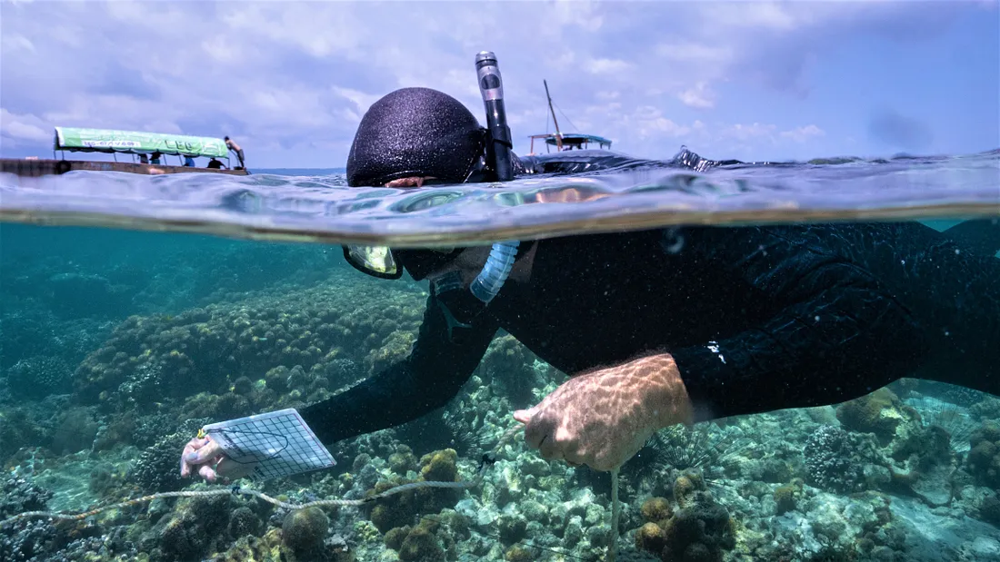

Assignment 1
This assignment covers topics in the notes from the Python review to the plotting with pandas lesson. Task 1 will contribute 20% to the total grade of the assignment and tasks 2 and 3 will contribute 40% each.
Submission instructions
For your upcoming assignment submission, you’ll be downloading your notebooks and then uploading them to Gradescope. Before you upload your finished notebooks to Gradescope, please rename your notebooks so they are called
hwk1-task2-corals-YOURLASTNAME.ipynbandhwk1-task3-earthquakes-YOURLASTNAME.ipynb.
It’s important to do this so we can keep track of resubmissions.
Thanks!
Task 1: Datasheets for Datasets reading
So much goes into creating a dataset, and data is more than numbers and words in a file. Without a proper understanding of the whole context where data was created, biases, omissions, and inacuracies can go undetected. The Datasheets for Datasets [1] framework advocates for transparency about the purpose and contents of datasets.
Check out this short interview with lead author Dr. Timnit Gebru, the executive director of the Distributed Artificial Intelligence Research Institute (DAIR), on the motivation to write this article:
Read the paper and write a one-paragraph (between 100 and 150 words) reflection about it. Review the rubric for this assignment here. Answer at least one of the following questions for your reflection:
Can you think of a dataset you have worked with or encountered in your studies that would have benefited from a datasheet? Explain why or why not, using specific details about the dataset’s context, collection methods, or biases.
What do you think are the limitations of the datasheets framework? Are there any challenges or risks associated with this approach, and how might they be addressed in practical settings?
How does the topic of transparency in datasets relate to your understanding of ethical data science practices? Provide an example where increased transparency could have changed the outcome of a dataset you have used or read about.
Based on your previous professional experience, if you were tasked with creating a dataset for a project, what challenges or decisions would you face when creating its datasheet? Reflect on one or two aspects of data collection or transparency that you feel are particularly important.
Setup for tasks 2 and 3
Task 2: Exploring coral diversity data
For this task we are going to use data about Western Indian Ocean Coral Diversity [2] stored in the the Knowledge Network for Biocomplexity (KNB) data repository. The author for this dataset is Dr. Tim McClanahan, senior conservation zoologist at Wildlife Conservation Society.

Follow the instructions in the notebook hwk1-task2-corals.ipynb to complete this task. Review the rubric for this assignment here. In this task you will practice:
- preliminary data exploration
- accessing data using a URL from a data archive
- selecting data from a data frame
- basic git workflow
- commenting your code
Task 3: pandas fundamentals with earthquake data
This task is adapted from the Pandas Fundamentals with Earthquake Data assignment from the e-book Earth and Environmental Data Science [3].
You will use simplified data from the USGS Earthquakes Database.
Follow the instructions in the notebook hwk1-task3-earthquakes.ipynb to complete this task.Review the rubric for this assignment here. Here you will practice:
- accessing data from your directory
- selecting data from a data frame
- creating exploratory graphs
- basic git workflow
- commenting your code